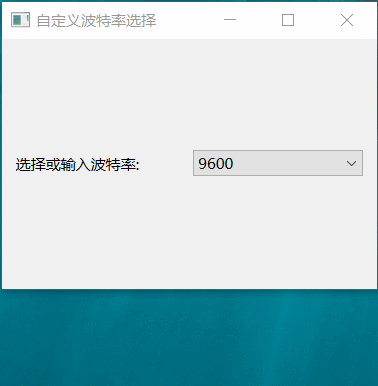

自定义波特率
import sys
from PySide6.QtWidgets import QApplication, QWidget, QHBoxLayout, QComboBox, QLabel, QLineEdit
from PySide6.QtGui import QIntValidator
class CustomBaudRateWidget(QWidget):
def __init__(self):
super().__init__()
self.initUI()
def initUI(self):
# 创建主布局
layout = QHBoxLayout()
# 创建用于显示提示信息的标签
label = QLabel("选择或输入波特率:")
layout.addWidget(label)
# 创建 QComboBox
self.baud_rate_combo = QComboBox(self)
# 预设常用的波特率选项
baud_rates = ["9600", "115200", "19200", "38400", "57600", "自定义"]
self.baud_rate_combo.addItems(baud_rates)
self.baud_rate_combo.currentIndexChanged.connect(self.on_baud_rate_index_changed)
self.baud_rate_combo.currentTextChanged.connect(lambda : print(f"当前波特率为{self.baud_rate_combo.currentText()}"))
layout.addWidget(self.baud_rate_combo)
# 将布局应用到窗口
self.setLayout(layout)
self.setWindowTitle('自定义波特率选择')
self.setGeometry(300, 300, 300, 200)
def on_baud_rate_index_changed(self, index):
if self.baud_rate_combo.currentText() == "自定义":
# 设置QLineEdit
line_edit = QLineEdit()
self.baud_rate_combo.setLineEdit(line_edit)
# 设置占位符
line_edit.setPlaceholderText("请输入波特率")
line_edit.clear()
# 将line_edit设置为仅可输入整数
validator = QIntValidator()
line_edit.setValidator(validator)
else:
self.baud_rate_combo.setEditable(False)
if __name__ == '__main__':
app = QApplication(sys.argv)
window = CustomBaudRateWidget()
window.show()
sys.exit(app.exec())
效果
